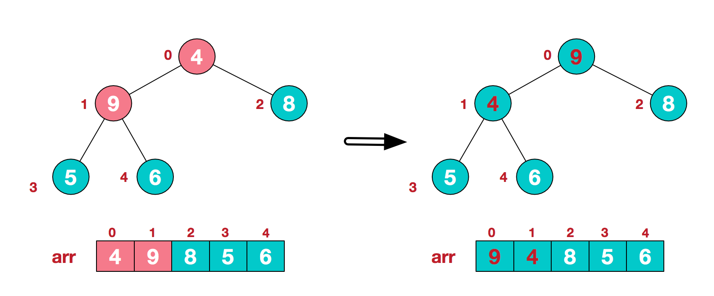
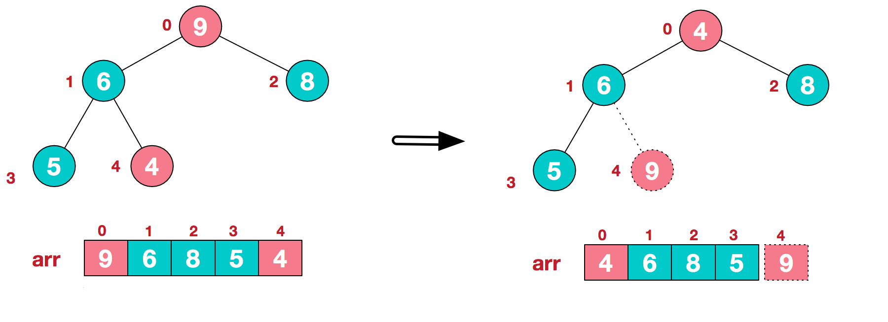
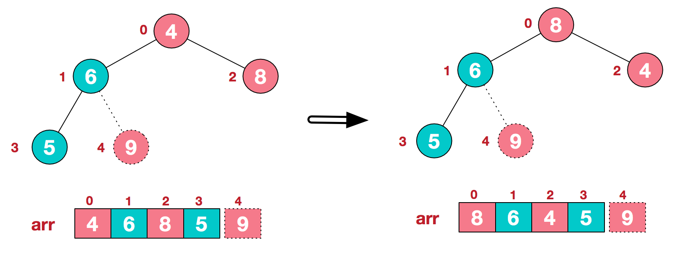

前言
堆排序是利用堆这种数据结构而设计的一种排序算法，堆排序是一种选择排序，它的最坏，最好，平均时间复杂度均为O(nlogn)，它也是不稳定排序。首先简单了解下堆结构。
堆
堆是具有以下性质的完全二叉树：每个结点的值都大于或等于其左右孩子结点的值，称为大顶堆；或者每个结点的值都小于或等于其左右孩子结点的值，称为小顶堆。如下图：

同时，我们对堆中的结点按层进行编号，将这种逻辑结构映射到数组中就是下面这个样子
大顶堆：arr[i] >= arr[2i+1] && arr[i] >= arr[2i+2]
小顶堆：arr[i] <= arr[2i+1] && arr[i] <= arr[2i+2]
堆排序基本思想及步骤
堆排序的基本思想是：将待排序序列构造成一个大顶堆，此时，整个序列的最大值就是堆顶的根节点。将其与末尾元素进行交换，此时末尾就为最大值。然后将剩余n-1个元素重新构造成一个堆，这样会得到n个元素的次小值。如此反复执行，便能得到一个有序序列了
步骤一 构造初始堆。将给定无序序列构造成一个大顶堆（一般升序采用大顶堆，降序采用小顶堆)。
1.假设给定无序序列结构如下

2.此时我们从最后一个非叶子结点开始（叶结点自然不用调整，第一个非叶子结点 arr.length/2-1=5/2-1=1，也就是下面的6结点），从左至右，从下至上进行调整。

3.找到第二个非叶节点4，由于[4,9,8]中9元素最大，4和9交换。

这时，交换导致了子根[4,5,6]结构混乱，继续调整，[4,5,6]中6最大，交换4和6。

步骤二 将堆顶元素与末尾元素进行交换，使末尾元素最大。然后继续调整堆，再将堆顶元素与末尾元素交换，得到第二大元素。如此反复进行交换、重建、交换。
a.将堆顶元素9和末尾元素4进行交换

b.重新调整结构，使其继续满足堆定义

c.再将堆顶元素8与末尾元素5进行交换，得到第二大元素8.

后续过程，继续进行调整，交换，如此反复进行，最终使得整个序列有序

再简单总结下堆排序的基本思路：
a.将无需序列构建成一个堆，根据升序降序需求选择大顶堆或小顶堆;
b.将堆顶元素与末尾元素交换，将最大元素”沉”到数组末端;
c.重新调整结构，使其满足堆定义，然后继续交换堆顶元素与当前末尾元素，反复执行调整+交换步骤，直到整个序列有序。
代码实现
package sortdemo;
import java.util.Arrays;
/**
* Created by chengxiao on 2016/12/17.
* 堆排序demo
*/
public class HeapSort {
public static void main(String []args){
int []arr = {9,8,7,6,5,4,3,2,1};
sort(arr);
System.out.println(Arrays.toString(arr));
}
public static void sort(int []arr){
//1.构建大顶堆
for(int i=arr.length/2-1;i>=0;i--){
//从第一个非叶子结点从下至上，从右至左调整结构
adjustHeap(arr,i,arr.length);
}
//2.调整堆结构+交换堆顶元素与末尾元素
for(int j=arr.length-1;j>0;j--){
swap(arr,0,j);//将堆顶元素与末尾元素进行交换
adjustHeap(arr,0,j);//重新对堆进行调整
}
}
/**
* 调整大顶堆（仅是调整过程，建立在大顶堆已构建的基础上）
* @param arr
* @param i
* @param length
*/
public static void adjustHeap(int []arr,int i,int length){
int temp = arr[i];//先取出当前元素i
for(int k=i*2+1;k<length;k=k*2+1){//从i结点的左子结点开始，也就是2i+1处开始
if(k+1<length && arr[k]<arr[k+1]){//如果左子结点小于右子结点，k指向右子结点
k++;
}
if(arr[k] >temp){//如果子节点大于父节点，将子节点值赋给父节点（不用进行交换）
arr[i] = arr[k];
i = k;
}else{
break;
}
}
arr[i] = temp;//将temp值放到最终的位置
}
/**
* 交换元素
* @param arr
* @param a
* @param b
*/
public static void swap(int []arr,int a ,int b){
int temp=arr[a];
arr[a] = arr[b];
arr[b] = temp;
}
}结果
[1, 2, 3, 4, 5, 6, 7, 8, 9]
总结
堆排序是一种选择排序，整体主要由构建初始堆+交换堆顶元素和末尾元素并重建堆两部分组成。其中构建初始堆经推导复杂度为O(n)，在交换并重建堆的过程中，需交换n-1次，而重建堆的过程中，根据完全二叉树的性质，[log2(n-1),log2(n-2)…1]逐步递减，近似为nlogn。所以堆排序时间复杂度一般认为就是O(nlogn)级。
本文参考原作者博客